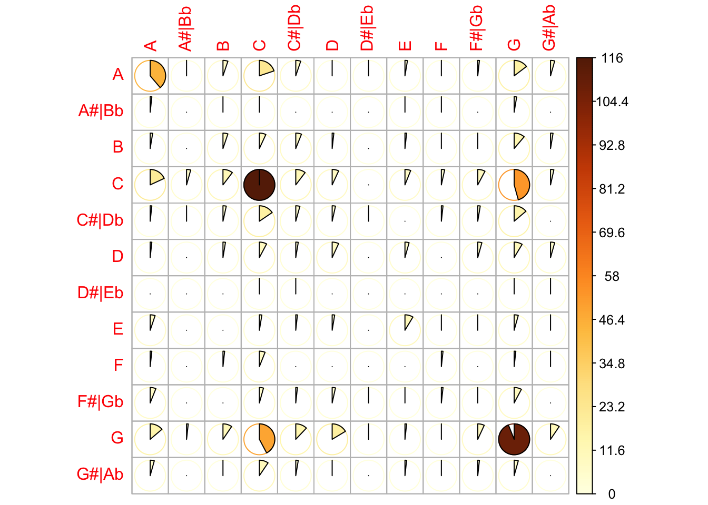
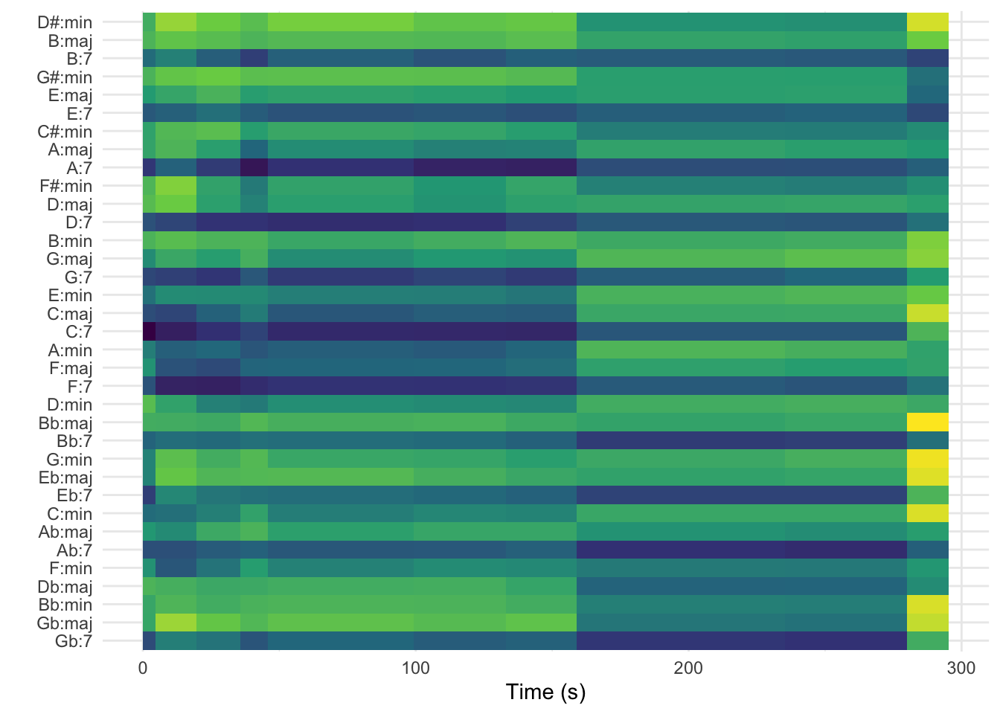

This week, we spent quite a bit of time discussing chroma vectors. > Pitch content is given by a “chroma” vector, > corresponding to the 12 pitch classes C, C#, D to B, > with values ranging from 0 to 1 that describe the relative > dominance of every pitch in the chromatic scale. For example > a C Major chord would likely be represented by large > values of C, E and G (i.e. classes 0, 4, and 7) > Vectors are normalized to 1 by their strongest dimension, > therefore noisy sounds are likely represented by values > that are all close to 1, while pure tones are described > by one value at 1 (the pitch) and others near 0. > As can be seen below, the 12 vector indices are a > combination of low-power spectrum values at their > respective pitch frequencies.
Chroma Vectors in Spotify
Looking at Chroma with compmus
Ashley Burygone’s brilliant compmus library has a nice feature called get_tidy_audio_analysis that can get the chroma vectors for us, and the following code can put it into a nice format for us.
####loading my librarieslibrary(tidyverse)
── Attaching core tidyverse packages ──────────────────────── tidyverse 2.0.0 ──
✔ dplyr 1.1.4 ✔ readr 2.1.5
✔ forcats 1.0.0 ✔ stringr 1.5.1
✔ ggplot2 3.5.1 ✔ tibble 3.2.1
✔ lubridate 1.9.3 ✔ tidyr 1.3.1
✔ purrr 1.0.2
── Conflicts ────────────────────────────────────────── tidyverse_conflicts() ──
✖ dplyr::filter() masks stats::filter()
✖ dplyr::lag() masks stats::lag()
ℹ Use the conflicted package (<http://conflicted.r-lib.org/>) to force all conflicts to become errors
### grabbing the "shake it off" pitches.shake_it_off <-get_tidy_audio_analysis("0cqRj7pUJDkTCEsJkx8snD") |>select(segments) |>unnest(segments) |>select(start, duration, pitches)
The following code allows you to turn it all into a list, and then a matrix, which will allow you to look at pitch-to-pitch transitions (of the most likely choice for pitch in the chroma vector):
chroma_names <-c("C", "C#|Db","D", "D#|Eb", "E", "F", "F#|Gb","G", "G#|Ab","A", "A#|Bb","B" )### here I'm unnesting the data and making it "long"long_shake_it <-unnest(shake_it_off, cols = pitches)
### note that I'm using the rep function to repeat all of the chroma names for however long the data frame is, dividing### it by 12 because of the 12 pitches.long_shake_it$chroma <-rep(chroma_names, nrow(long_shake_it)/12)long_shake_it <- long_shake_it |>filter(pitches ==1) |>mutate(chroma2 =lead(chroma))x <-as.matrix(table(long_shake_it |>select(chroma, chroma2)))corrplot(x, is.corr =FALSE, method ="pie")

Chords
Burgoyne’s chordogram functions allow us to look at the likely chordal spaces for specific piecses. The code below does a few things:
First we define what a major, minor, and seventh chord looks like in terms of pitch space.
We then use the key-profiles from the Krumhansl-Kessler article on the probe tone experiments and store them into major_key and minor_key variables.
The circshift function rotates these key profiles through the chord variables and provides the best fit for that moment. This is done through the key_templates variable (Notice the compmus_match_pitch_template below).
The code below should look familiar from the last week’s discussions on key-finding.
Here we have a piece of code that grabs a single audio file (“Those magic changes”). In class we listened to it while going through the chordogram. Can you spot the modulation? Why do we get that yellowish color at the end of the graph?
those_magic_changes <-get_tidy_audio_analysis("1WHauHX7U6FqOWh46lK4IV") |>compmus_align(sections, segments) |>select(sections) |>unnest(sections) |>mutate(pitches =map(segments, compmus_summarise, pitches,method ="mean", norm ="manhattan" ) )those_magic_changes |>compmus_match_pitch_template( chord_templates, # Change to chord_templates if desciredmethod ="euclidean", # Try different distance metricsnorm ="manhattan"# Try different norms ) |>ggplot(aes(x = start + duration /2, width = duration, y = name, fill = d) ) +geom_tile() +scale_fill_viridis_c(guide ="none") +theme_minimal() +labs(x ="Time (s)", y ="")

Exercise
Find a song that you like, explore it in terms of chord transitions and see what you think of it. Note that this might not be entirely different from your discussion post, but might yield different results. Why do you think that is?
Time
Let’s turn our focus now to tempo and time. There are a few different ways to examine tempo with the Spotify API. Today we will look at:
We can elements of tempo such as variability within sections. Here we have a question about the differences in tempo between punk in the 1980s and later punk (1990s and 2000s). I’m interested not just in the tempo, but also the variation of tempo.
There are a couple of points to notice in this code:
Note how we are able to get data from a playlist. A playlist can be a good way for you to construct a sample.
Note the add_audio_analysis function from the compmus library. This adds track level analysis information to the broader list of global information. It’s great.
Sit for a minute with this data. You’ll see the columns at the end that provided the specific audio analysis for each piece.
Here we bind both playlists together as a single data frame:
punk <- eighties_punk |>mutate(genre ="eighties") |>bind_rows(nineties_and_aughts_punk |>mutate(genre ="newer"))
The spotify analysis gives us section markers as well, and we can use the code below to summarise the tempo, loudness, and duration for each section. Note the use of the map function, which takes the input and applies a function to that input (here the summarise_at function, and the summarise_at itself, which provides a summary of each of these columns.
Here we are storing it in a variable called summarised_punk.
summarised_punk <- punk |>mutate(sections =map( sections, # sections or segments summarise_at,vars(tempo, loudness, duration), # features of interestlist(section_mean = mean, section_sd = sd) # aggregation functions ) )
Now we take this variable and plot it using ggplot.
The process below is as follows:
take the table above with summarized section information and unnest it (this takes the sections list of information and turns it into rows and columns).
Pipe that into ggplot, with the aesthetics function plotting the tempo on the x-axis, the standard deviation on the y-axis, the color being which genre we used (eighties or not). The color saturation is set to the loudness variable.
We then tell ggplot that we want this to be a scatterplot with the geom_point function, and that the size of each point should be the duration of the piece (divided by 60 as Spotify just gives it in seconds).
We then add a rug plot which gives the ticks on both axes to show the distribution of events.
We then add a black and white theme because nobody likes default graphics.
We then add the size of the graph and the axis labels.